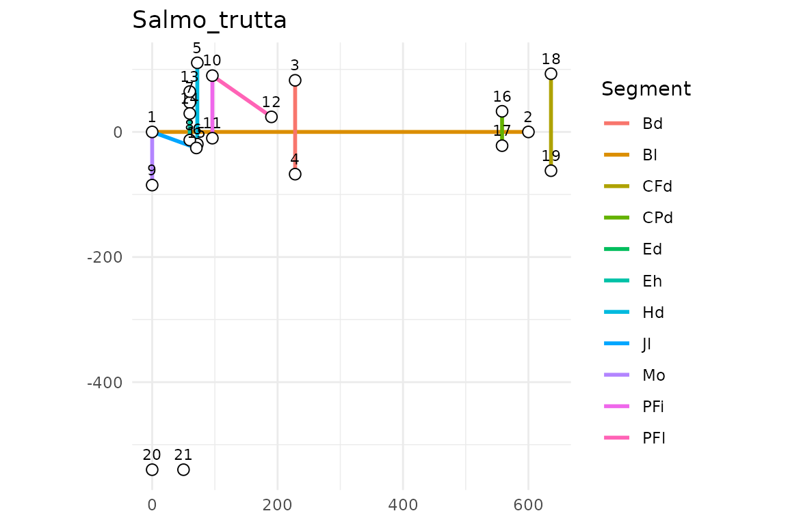
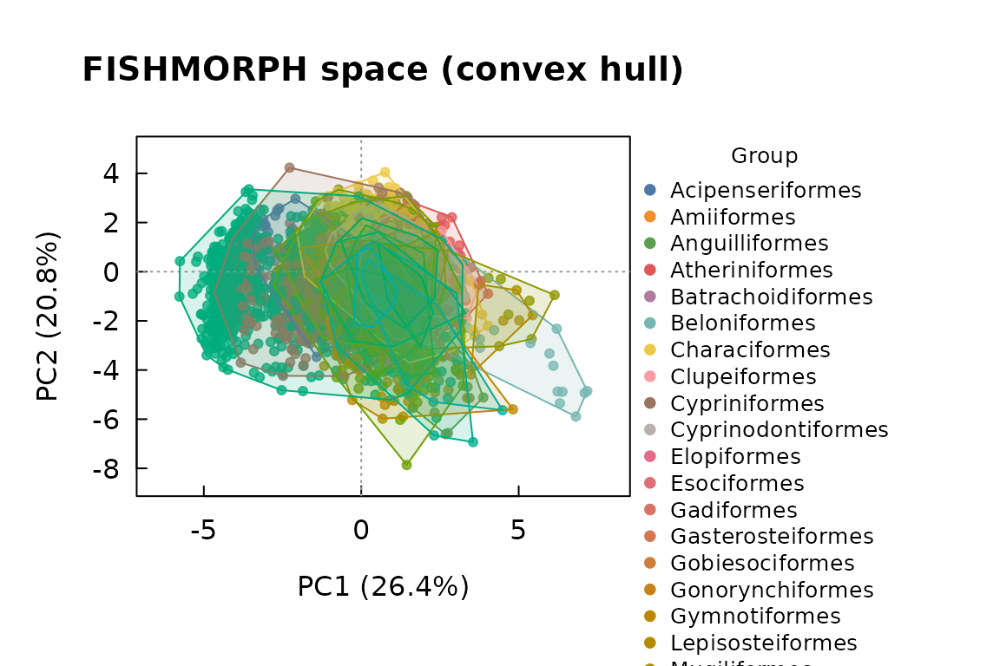
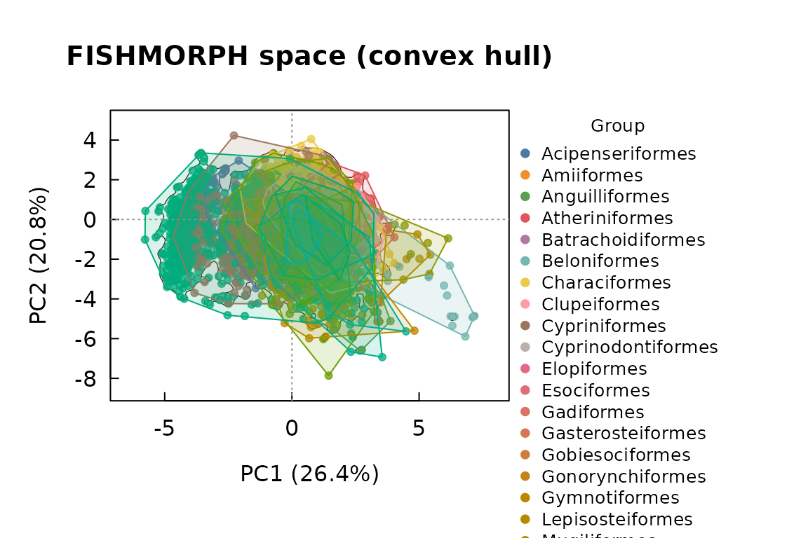

The FISHMORPH scheme
Rfishmorph implements the FISHMORPH morphospace of
Brosse et al. (2021): 21 landmarks digitized on a lateral photograph,
from which 11 body segments and 9 dimensionless ratios are derived.
sc <- fishmorph_schema()
sc$segments
#> [1] "Bl" "Bd" "Hd" "Eh" "Mo" "PFi" "PFl" "Ed" "Jl" "CPd" "CFd"
sc$ratios
#> [1] "BEl" "VEp" "REs" "OGp" "RMl" "BLs" "PFv" "PFs" "CPt"
data.frame(ratio = sc$ratios,
definition = vapply(sc$ratio_def, paste, "", collapse = " / "),
`function` = sc$ratio_function[sc$ratios],
check.names = FALSE)
#> ratio definition function
#> BEl BEl Bl / Bd Hydrodynamism / position in the water column
#> VEp VEp Eh / Bd Vertical position of prey
#> REs REs Ed / Hd Visual acuity
#> OGp OGp Mo / Bd Feeding position in the water column
#> RMl RMl Jl / Hd Size of prey / mouth
#> BLs BLs Hd / Bd Position in the water column
#> PFv PFv PFi / Bd Pectoral use for manoeuvrability
#> PFs PFs PFl / Bl Pectoral use for propulsion / manoeuvrability
#> CPt CPt CFd / CPd Caudal propulsion efficiencyFrom landmarks to traits
lm <- read_landmarks_csv(
system.file("extdata", "example_landmarks.csv", package = "Rfishmorph"))
lm
#> <fishmorph_landmarks>
#> specimens : 2
#> landmarks : 25 (2D)
#> names : Salmo_trutta, Cyprinus_carpio
seg <- fishmorph_segments(lm, scale_cm = 1)
seg
#> specimen Bl Bd Hd Eh Mo PFi PFl Ed Jl CPd CFd
#> 1 Salmo_trutta 12 3.0 2.6 1.2 1.7 2.0 2.300000 0.7 1.499999 1.1 3.1
#> 2 Cyprinus_carpio 15 5.2 3.4 1.6 2.1 2.6 2.899999 0.8 1.400000 1.6 4.0
fishmorph_ratios(seg)
#> specimen BEl VEp REs OGp RMl BLs
#> 1 Salmo_trutta 4.000000 0.4000000 0.2692308 0.5666667 0.5769227 0.8666667
#> 2 Cyprinus_carpio 2.884615 0.3076923 0.2352941 0.4038462 0.4117648 0.6538462
#> PFv PFs CPt
#> 1 0.6666667 0.1916667 2.818182
#> 2 0.5000000 0.1933333 2.500000
plot_landmarks(lm, specimen = 1)
Reconstruction and the round-trip guarantee
reconstruct_fishmorph_landmarks() inverts
fishmorph_segments(). The free parameters move landmarks
around but never change segment lengths, so the round-trip is exact.
seg1 <- list(Bl = 10, Bd = 3.2, Hd = 2.4, Eh = 1.1, Mo = 1.6, PFi = 1.9,
PFl = 2.1, Ed = 0.6, Jl = 1.3, CPd = 1.0, CFd = 3.0)
check_reconstruction_roundtrip(seg1)
#> Round-trip: max error = 2.22e-16 cm (OK)The functional trait space
The ordination is fitted once on the reference database and then frozen, so new specimens are projected into the same coordinate system rather than re-estimating the axes.
ref <- load_fishmorph_reference()
#> FISHMORPH reference: segment (published) -- 8970 species.
ts <- fishmorph_trait_space(ref, groups = ref$Order)
ts
#> <fishmorph_trait_space>
#> specimens : 8970
#> traits : BEl, VEp, REs, OGp, RMl, BLs, PFv, PFs, CPt
#> transform : no log10, scaled
#> variance : PC1 26.4%, PC2 20.8% (cum 47.2%)
#> na_action : omit
plot_trait_space(ts, style = "hull") # per-group convex hulls
plot_trait_space(ts, style = "hull", reference_density = TRUE) # + global density
Quality control: segments vs landmarks
Two scale-invariant quantities let you check a workbook’s internal
consistency: the 9 ratios and the segments expressed as a fraction of
Bl.
segtab <- data.frame(
Genus.species = paste0("sp", 1:6), Bl = 10,
Bd = c(3, 3.2, 3.4, 3.6, 3.8, 4), Hd = c(2, 2.1, 2.2, 2.3, 2.4, 2.5),
Eh = 1, Mo = 1.5, PFi = 2, PFl = 2.5, Ed = 0.5, Jl = 1.2, CPd = 1, CFd = 3)
cmp <- compare_segments_landmarks(segtab, segtab, id_col = "Genus.species")
summary(cmp)
#> <fishmorph_comparison>
#> variant: standard | matched id column: Genus.species
#>
#> Ratio agreement (landmark vs published):
#> trait n pearson bias rmse
#> BEl 6 1 0 0
#> VEp 6 1 0 0
#> REs 6 1 0 0
#> OGp 6 1 0 0
#> RMl 6 1 0 0
#> BLs 6 1 0 0
#> PFv 6 1 0 0
#> PFs 6 NA 0 0
#> CPt 6 NA 0 0
#>
#> weakest ratio: BEl (r = 1.00)Adding a new species
rec <- new_fishmorph_species(
"Genus novus",
segments = list(Bl = 10, Bd = 3.2, Hd = 2.4, Eh = 1.1, Mo = 1.6, PFi = 1.9,
PFl = 2.1, Ed = 0.6, Jl = 1.3, CPd = 1.0, CFd = 3.0),
family = "Cyprinidae", order = "Cypriniformes")
ref2 <- add_fishmorph_species(ref, rec)
#> Added 1 species: Genus novus
nrow(ref2)
#> [1] 8971Name resolution and the global freshwater list require
rfishbase and network access:
validate_species_names(c("Salmo trutta", "Esox_lucius"))
fw <- freshwater_fish_list()Reference
Brosse et al. (2021) Global Ecology and Biogeography 30:2330–2336. https://doi.org/10.1111/geb.13395